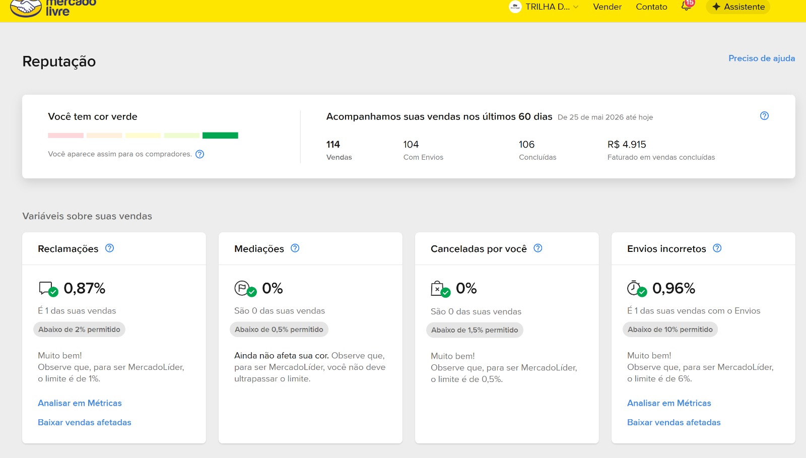
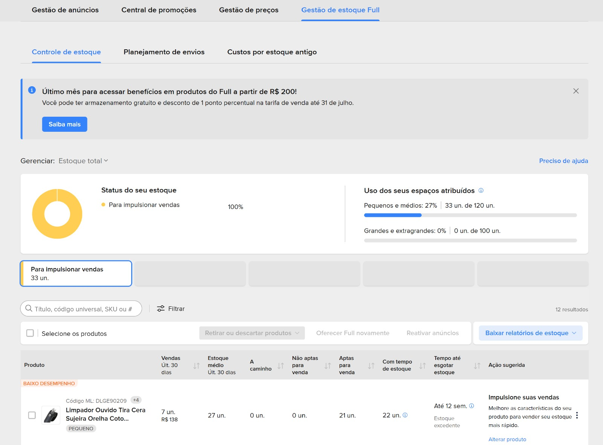
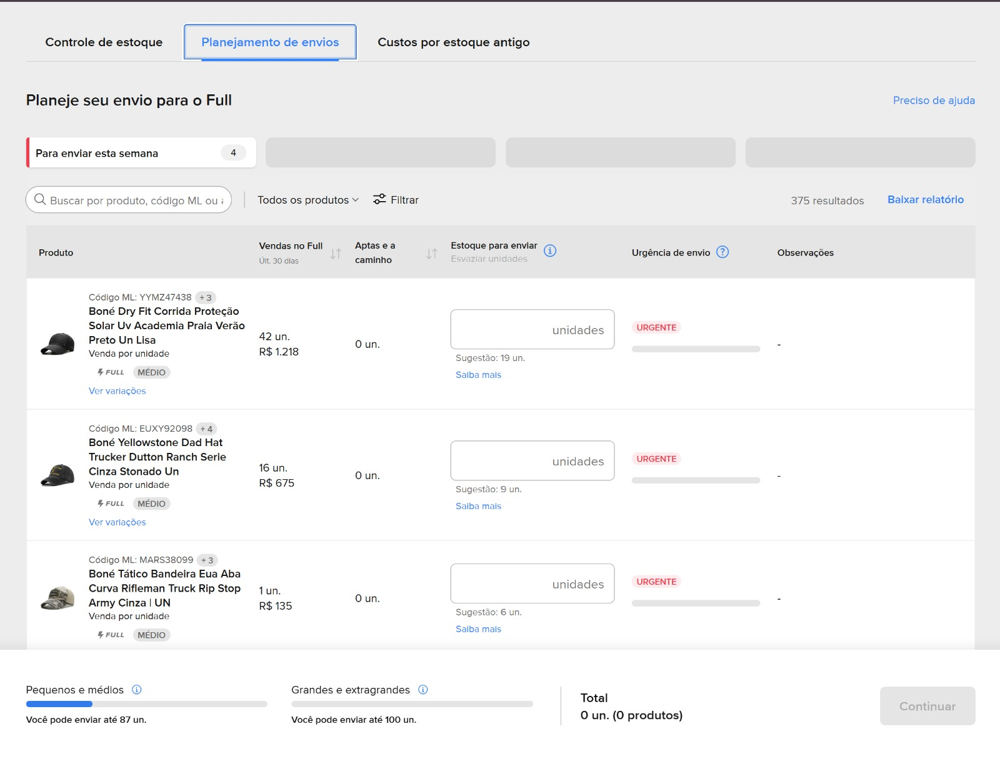
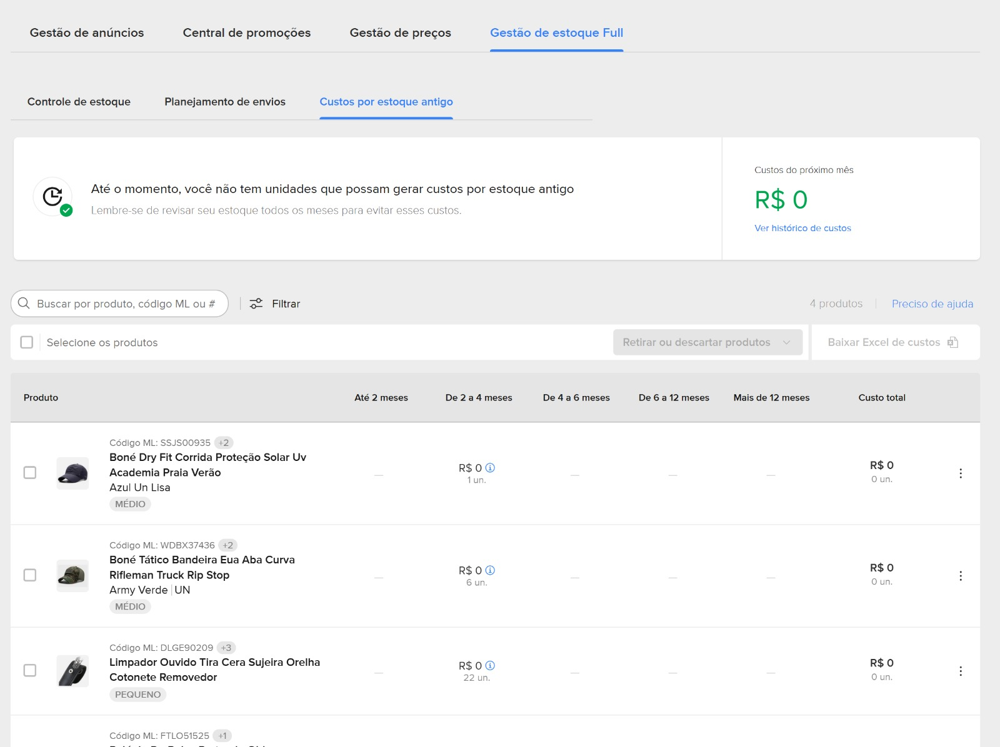

Introdução ao canal para quem está começando: como o Mercado Livre funciona, as alavancas que decidem a venda e o vocabulário que você vai ouvir todo dia. Depois disto, leia a Visão Geral · Mercado Livre (o método 4D).
📝 RASCUNHO v0.1 — casca a validar/preencher. Estrutura pronta; revisar números e prints antes de publicar.
🏢 Vai criar conta nova? Se o cliente ainda não tem conta e quer entrar como empresa (CNPJ / B2B), cadastre por esta página específica: mercadolivre.com.br/hub/registration/landing/b2b. Se cadastrar por outro caminho, o ML pode criar a conta como pessoa física (CPF) em vez de CNPJ — e trocar depois é dor de cabeça.
Líder absoluto de e-commerce no Brasil, com tráfego de alta intenção de compra (a pessoa já está procurando o produto) e uma base que confia na plataforma. Quem tem reputação verde, entrega rápida e relevância na busca vende em escala.
💡 Mentalidade: no ML a venda não vem de conteúdo/descoberta (como no TikTok). Vem de aparecer bem na busca e no catálogo, com preço e entrega que ganham a confiança. É uma operação de eficiência, não de viralização.
2Reputação — a moeda do canal
Termômetro: mede a saúde da conta (cor verde = saudável). Cai com atrasos, cancelamentos e reclamações.
MercadoLíder (Líder / Gold / Platinum): selo que destrava visibilidade e conversão.
Reputação verde + entrega rápida = mais exposição e mais chance de ganhar a Buy Box.
📍 Onde ver: painel de Reputação do vendedor → mercadolivre.com.br/reputacao. O ML acompanha os últimos 60 dias e mostra sua cor + as variáveis que a afetam.

Painel de Reputação (exemplo): cor verde, 60 dias, e as 4 variáveis com seus limites permitidos e as metas mais duras de MercadoLíder.
As variáveis que definem a cor (e os tetos mais duros para virar MercadoLíder):
Variável
Limite permitido
Meta MercadoLíder
Reclamações
< 2%
≤ 1%
Mediações
< 0,5%
não ultrapassar o limite
Canceladas por você
< 1,5%
≤ 0,5%
Envios incorretos
< 10%
≤ 6%
3Mercado Envios & Full
Mercado Envios é a logística da plataforma. Mercado Envios Full é o fulfillment do ML: o vendedor manda o estoque pro centro de distribuição do ML, e o ML armazena, embala e envia. Ganha prazo curto, ajuda a ganhar a Buy Box e escala nacional. Tem tarifa de fulfillment e armazenagem (entra na precificação).
🗂️ O Full tem duas macro-áreas de operação: (1) Gestão de envios (mandar produto pro centro — o inbound) e (2) Gestão do estoque no Full (o que já está armazenado). Quem opera ML no dia a dia vive nessas duas telas.
3.1 · Gestão de envios (inbound)
É literalmente o envio do seu produto pro centro logístico do ML — o que chamamos de inbound. Você cria um envio ("Enviar produtos"), declara as unidades, reserva data e centro logístico, e acompanha o custo aplicado e o status do processamento.
Gestão de envios Full: cada linha é um envio ao centro logístico, com Declaradas / Aptas para o Full, data reservada, custo e status.
Fique de olho no status: "Un. com diferenças" e o selo COM INCONFORMIDADE significam que o ML recebeu quantidade/itens diferentes do declarado — precisa conferir os detalhes e corrigir (afeta custo e disponibilidade de estoque).
3.2 · Gestão do estoque no Full
É a outra tela: onde você acompanha o estoque já armazenado no Full — quantidade de vendas, cobertura, saldo e a saúde do estoque. Fica no hub do vendedor, na aba Gestão de estoque Full (ao lado de Gestão de anúncios, Central de promoções e Gestão de preços). Traz o uso dos espaços atribuídos (Pequenos/médios × Grandes/extragrandes) e, por produto, Vendas 30d, estoque médio, a caminho, aptas/não aptas para venda, tempo até esgotar e uma ação sugerida.

Gestão de estoque Full → aba Controle de estoque: saúde do estoque, uso dos espaços e ação sugerida por produto.
Essa área tem 3 sub-abas:
Sub-aba
Pra que serve
Controle de estoque
A visão do dia a dia: vendas dos últimos 30 dias, estoque médio, tempo até esgotar, unidades aptas/não aptas e o uso dos espaços (pequenos/médios × grandes). Aponta baixo desempenho e estoque excedente.
Planejamento de envios
Mostra parte da performance e sugere quantos produtos enviar com base no volume de vendas — evita ruptura (esgotar) e excesso (estoque parado).
Custos por estoque antigo
Auto-explicativo: o custo de armazenagem cresce quanto mais tempo o produto fica parado no Full. Incentiva girar ou retirar o estoque antigo.

Planejamento de envios: sugere quanto repor por produto com base no volume de vendas.

Custos por estoque antigo: quanto mais tempo parado, mais caro — empurra o giro.
💡 Leitura de gestor: Controle diz como está agora, Planejamento diz quanto repor, Custos por estoque antigo pune o que não gira. O alvo é cobertura saudável — nem romper (perde Buy Box e venda), nem encalhar (paga armazenagem à toa).
4Catálogo, ficha, SEO & anúncio de catálogo
É o chão da operação. Título, ficha técnica (atributos), fotos, variações e preço. Ficha completa e título certo = mais relevância na busca (SEO do ML) e mais chance de ganhar o destaque da venda.
🔁 "Buy Box" é o termo da Amazon. No Mercado Livre o equivalente é o anúncio de catálogo: quando vários vendedores oferecem o mesmo produto, o ML junta todos numa única publicação e escolhe um ganhador pra ficar em destaque (o botão de comprar). Ganha quem combina melhor preço + reputação + tipo de anúncio + envio (Full). É onde a venda é decidida.
Tipos de anúncio
Tipo de anúncio
Resumo
Clássico
Tarifa de venda menor, sem parcelamento sem juros longo. Bom pra ticket menor/giro.
Premium
Tarifa maior, com mais parcelas sem juros e mais exposição. Bom pra ticket alto.
5Mercado Ads
A plataforma de anúncios do ML. O principal é o Product Ads (anúncio de produto na busca/vitrine). Métricas que você vai ouvir:
ACOS = gasto de mídia ÷ vendas geradas pela mídia (eficiência por campanha).
TACOS = gasto total com Mercado Ads ÷ faturamento total — quanto de cada R$ 1 vendido está sendo comprado com mídia. É a métrica-guia do método 4D no ML.
6Tarifas e margem
Antes de subir o produto, calcula-se a margem de contribuição com:
Tarifa de venda: comissão que varia por categoria e por tipo de anúncio (Clássico/Premium).
Custo fixo por item (para itens de menor valor).
Tarifas do Full: fulfillment + armazenagem.
Precificar sempre por margem de contribuição — entrar com o preço certo desde o dia 1, sem susto no caixa.
7Glossário rápido
Termo
É
Anúncio de catálogo
publicação única do mesmo produto com vários vendedores; o ML destaca um ganhador (equivale à "Buy Box" da Amazon)
Full
Mercado Envios Full — fulfillment do ML
Termômetro
indicador de saúde/reputação da conta
MercadoLíder
selo de reputação (Líder/Gold/Platinum)
ACOS / TACOS
eficiência de mídia por campanha / sobre o faturamento total
Clássico / Premium
os dois tipos de anúncio (tarifa e parcelamento diferentes)
Elevate Ecom. — Sua marca acima nos marketplaces. · Formação Mercado Livre (rascunho interno).